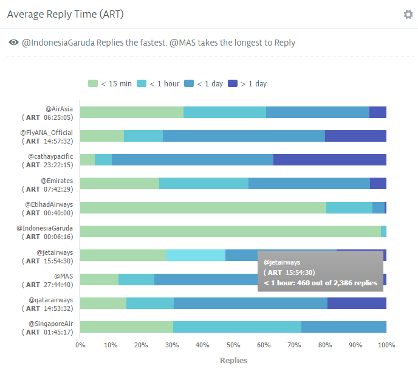

Mar 4, 2016
Do you follow an aviation brand on social? Whether it's to receive information about your flight, address customer support or to be notified about offers, following a brand on social media seems the easiest way to get updates.
So how are top brands in the APAC and MEA region engaging with their audience? We've analyzed the strategies of top brands in the region to find out.
We've chosen the following list of brands by first checking to see which the best airline brands are, which we found here. We then cherry picked 10 based on fanbase size, to get an idea of the varied strategies across the region. For this report, we analyzed:
Customer Service finds a natural home in the 140 character space, and this is true for the aviation industry as well. Airlines across the world have been forced to adapt quickly to this forum as, unlike in traditional customer service, conversations and grievances can be aired publicly and around the clock. Benchmarking a brand's Average Reply Time, or ART, against best performers can not only set goals for your team but gives an idea of what customers will expect as well.

From the image above we see that @IndonesiaGaruda replies the fastest while @MAS (Malaysia Airlines) takes the longest to reply. Garuda Indonesia also had the best reply rate - the percentage of mentions that the brand replied to, with Replies comprising 95% of their Tweets . This dedication to customer service on Twitter is already seeing returns as the brand added the highest number of new Followers last month, gaining more than 85K Followers in the last month alone!
While Twitter is the customer service hub of an airline's social media presence, Facebook is a great place to share content or information that cannot be contained in 140 characters. The clear winner among these brands in sheer fanbase alone is Qatar Airways. Typically, brands with more Fans tend to have lower Growth Rates but Qatar Airways has clearly bucked the trend - enjoying the highest growth rate in January while commanding the largest fanbase as well.

So how did Qatar Airways grow their fanbase at such a high rate, while consistently engaging well with its Fans, even receiving the highest number of Likes in January?
When we dove deeper into their content, it became obvious that the airline was actively encouraging interaction with an engagement oriented strategy. In January, Qatar Airways held a Travel Festival where Fans could enjoy discounted rates for a limited period, and this drove their considerable number of Fans to pay attention and interact.
Building this kind of loyalty on social is essential for a brand as a study found that 46% of shoppers rely on social media when making purchase decisions. Now that's a number that any brand should be capitalizing on.
Of the 10 brands analyzed, 8 have a strong Instagram presence and strategy in place. The Follower growth rate across the board only had a 10 percent difference - a strong indicator of consumer trends as well.

This steady growth in Followers also begs the question - why are users flocking to these Instagram accounts? And how are brands capitalizing on this?
The surest way to convert a Follower to a customer is by increasing brand recall and staying on top of your potential customer's mind. With Instagram's ever increasing popularity - especially with tourists and people who travel frequently, brands should be posting consistently.
Emirates is a great example of this - posting 37 pieces of content in January. By producing fresh and original content on a regular basis they were able to add a whopping 88 thousand new Followers in one month alone. Publishing a steady stream of content also ensured they were one of the best engaging brands in the region, with a higher Engagement Score than the sector average.
Instagram has a certain aesthetic that Emirates seems to understand very well. Leveraging their reputation as the largest airline in the Middle East, some of their most engaging content featured Dubai as the star.
Apart from this, they also heavily rely on branded, yet stunning imagery to bring their brand to life - a strategy also practiced by Singapore Airlines, Etihad Airlines and other top brands in the industry.
Social media was touted as the biggest disruption in marketing, and rightly so. As the learnings from the brands highlighted above, there are definite benefits to investing resources in a robust social media presence.
Get interviews from your peers and industry experts, advice on social analytics and analyst debriefs of thought leaders delivered directly to your inbox.
clicking on ".more" toggles class "visible" on ".nav-main-dd"
clicking on ".testimonial-content--2 .testimonial-link" removes class "is-active" on ".testimonial-content--3"
clicking on ".testimonial-content--2 .testimonial-link" adds class "is-active" on ".testimonial-content--2"